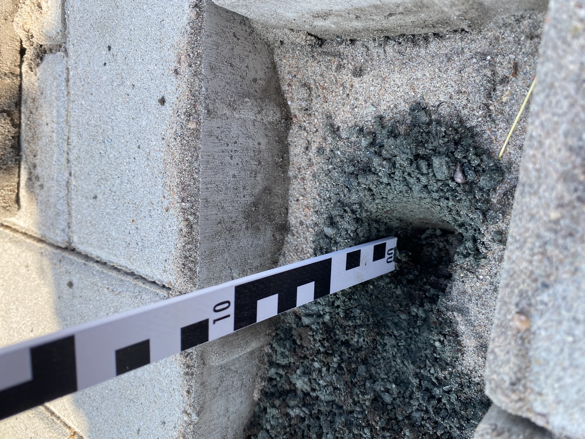

Unsere Leistungen
Als unabhängiger Gutachter biete ich rechtssichere, praxisnahe und verständliche Gutachten in verschiedenen Bereichen an. Hier ein Überblick meiner Kernleistungen:

Schadensgutachten
Erstellung von Gutachten für Versicherungen, Kommunen, Firmen und Privatkunden. Schnell, zuverlässig und fachlich fundiert.

Spielplatzprüfung
Sicherheitsprüfungen nach DIN EN 1176 & TÜV-konform für öffentliche und private Spielplätze. Alle Ergebnisse werden nachvollziehbar dokumentiert.

Wertermittlung
Präzise Wertermittlungen von Außenanlagen, Bäumen und Gehölzen – objektiv, nachvollziehbar und belastbar.

Versicherungs-Gutachten
Gutachten speziell für Versicherungszwecke: Schadenbewertung, Haftungsfragen und Ersatzansprüche – transparent und rechtlich belastbar.